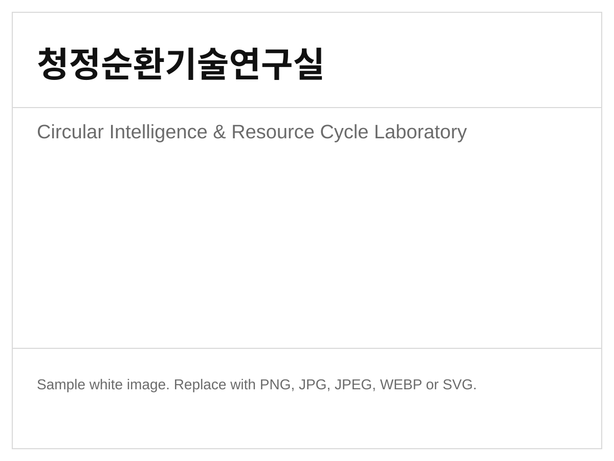

연구 방향
자원순환, 저탄소 공정, 환경 소재를 아우르는 융합형 연구 수행
SEJONG UNIVERSITY
청정에너지, 순환공정, 환경소재를 중심으로 지속가능한 미래를 위한 실용 연구를 수행합니다. 메인 이미지는 아래 파일만 교체하면 바로 반영되도록 구성했습니다.

메인 사진 교체: `images/main-visual.svg` 파일을 원하는 사진 파일명으로 바꾸거나 같은 경로에 덮어쓰면 됩니다.
자원순환, 저탄소 공정, 환경 소재를 아우르는 융합형 연구 수행
실험 기반 검증, 데이터 해석, 산학 협력을 연결하는 실용 연구 운영
대학원 진학, 학부연구생, 공동연구 문의는 연락처 페이지에서 확인